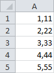
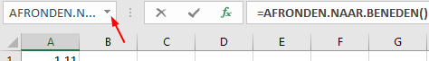
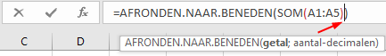

Taak: Geneste functies invoeren
Uitleg over wat een geneste functie is en hoe je deze via de wizard invoert.
Wanneer voor een argument bij een functie weer een functie gebruikt wordt, dan heet dat een geneste functie. Binnen de haakjes van een functie staat dan opnieuw een functie. Een voorbeeld:
=AFRONDEN.NAAR.BENEDEN(SOM(A1:A5);0)
Als oefening wordt deze geneste functie in een werkblad ingevoerd.
-
Begin met een nieuw werkblad en voer de gegevens in zoals in de afbeelding
hierna is weergegeven.
Figuur 1. Invoer voor oefening geneste functie  - Selecteer cel A6 en druk op de knop Functie invoegen op de formulebalk.
-
Selecteer de categorie Wiskunde en trigonometrie en de functie
AFRONDEN.NAAR.BENEDEN en klik op
OK.
Het dialoogvenster Functieargumenten verschijnt.
-
Klik nu in het werkblad op de keuzepijl in het naamvak.
Figuur 2. Toevoegen van een nieuwe functie Er verschijnt een uitklapvenster met daarin de namen van de laatst gebruikte functies en onderaan de vermelding Meer functies. -
Klik op Meer functies.
Het bekende dialoogvenster Functie invoegen verschijnt.
-
Selecteer categorie Wiskunde en trigonometrie en de functie
SOM en klik op OK.
Het dialoogvenster Functieargumenten verschijnt. Bij het argument Getal1 is reeds A1:A5 ingevuld.
-
Klik OK.
Er verschijnt nu een waarschuwingsvenster met de mededeling dat er te weinig argumenten zijn ingevoerd. Dat klopt, want bij de functie AFRONDEN.NAAR.BENEDEN moet ook verplicht het aantal decimalen worden ingevoerd.
-
Klik OK.
De cursor knippert nu tussen de laatste twee sluithaakjes
) )
. Op deze plaats moet het lijstscheidingsymbool (puntkomma) en het tweede argument (het aantal decimalen) worden ingetypt.Figuur 3. Plaats voor het invoegen van argumenten  -
Typ in ;0 en druk op Enter.
In cel A6 verschijnt nu het antwoord 16.